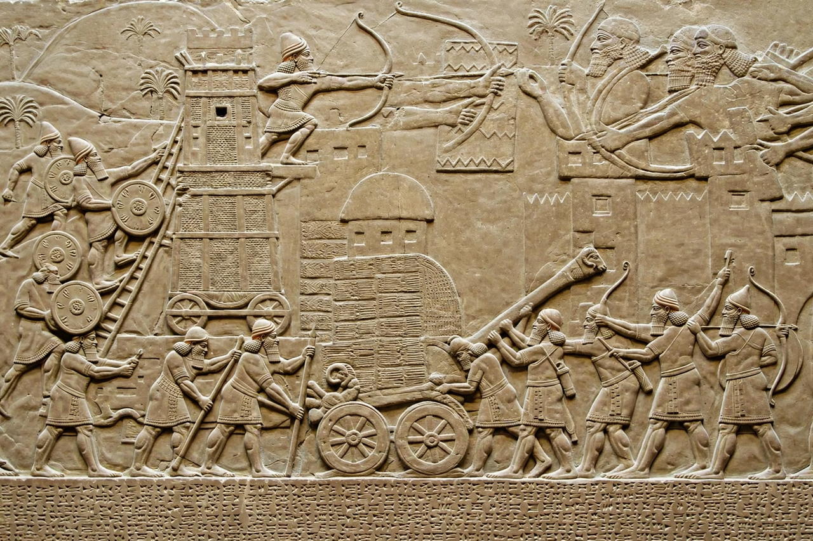

Neo-Assyrian Empire

Dates: 911 – 609 BCE
Capitals: Assur, Kalhu (Nimrud), Dur-Sharrukin, Nineveh
Notable kings: Ashurnasirpal II, Tiglath-Pileser III, Sargon II, Sennacherib, Esarhaddon, Ashurbanipal
Language: Akkadian, Aramaic
The Neo-Assyrian Empire was the fourth and final stage of Assyrian history, an Iron Age Mesopotamian empire existing from 911 BCE until its collapse in 609 BCE. At its height it was the largest empire the world had yet seen, dominating the Near East from Egypt to western Iran, and is often described as the first true world empire.
Rise and expansion
Beginning under Adad-nirari II, Assyria recovered from Bronze Age collapse. Ashurnasirpal II (883–859 BCE) campaigned from his new capital at Kalhu and made Assyria feared for its military efficiency and calculated brutality. After a period of weakness, Tiglath-Pileser III (745–727 BCE) reformed the army and administration, replacing vassals with provinces ruled by royal governors. The Sargonid dynasty — Sargon II, Sennacherib, Esarhaddon and Ashurbanipal — brought the empire to its greatest extent: Sennacherib destroyed Babylon and besieged Jerusalem, Esarhaddon conquered Egypt in 671 BCE, and Ashurbanipal sacked Susa and assembled his great library at Nineveh.
Administration and army
The empire pioneered systematic provincial government, royal roads, a mounted postal service and mass deportation of conquered populations to break resistance and supply labour. Its professional standing army fielded infantry, cavalry, chariots and sophisticated siege engines. Aramaic, written alphabetically, increasingly served alongside cuneiform Akkadian as an administrative language.
Fall
After Ashurbanipal's death (c. 627 BCE) succession disputes weakened the empire. Nabopolassar of Babylon allied with the Medes under Cyaxares; Nineveh fell in 612 BCE after a three-month siege, and the last Assyrian resistance at Harran was extinguished by 609 BCE. The empire's territory passed to the Neo-Babylonian and Median empires.
Legacy
Assyrian palace reliefs, colossal lamassu guardians and the Library of Ashurbanipal — which preserved texts including the Epic of Gilgamesh — are its enduring monuments. Its administrative and military model influenced the Babylonian, Persian and later empires that succeeded it.
See also: Assyria · Achaemenid Empire · Sumer